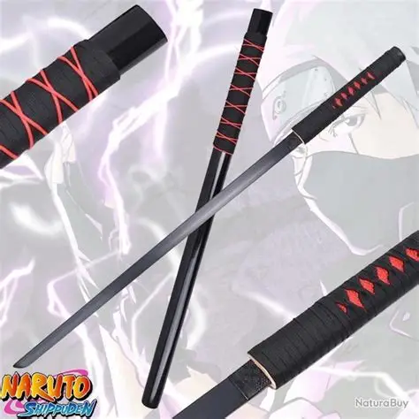
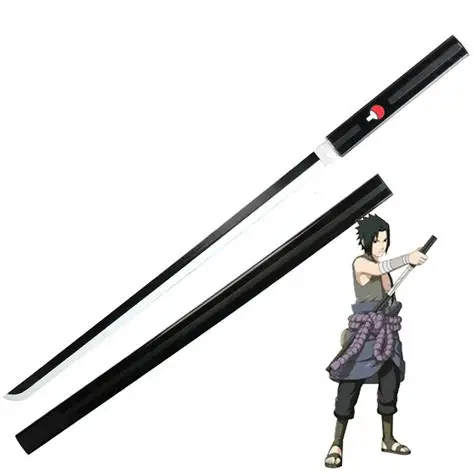

Galería




The art and beauty of Japanese swords
La chokutō es una espada japonesa recta tradicional, antecesora de la katana curva. Es perfecta para coleccionistas, artistas marciales y amantes de la decoración.
⚔ Ideales para:
• Coleccionistas
• Cosplays tradicionales
• Decoración de espacios

